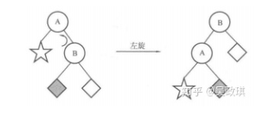
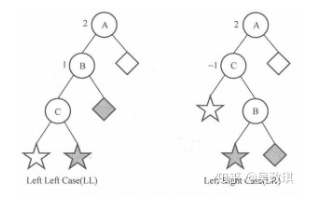

B 树、B+树、二叉搜索树与红黑树
前言
B 树是一种用于索引外部存储数据的数据结构。许多数据库系统与文件系统都有它或者它的变体的应用。我们在这里讨论 B 树，B+ 树以及其他的树，为理解基于 B+ 树的 iDistance 算法打下基础。
为什么需要 B 树（和其他平衡树）
我们早就知道可以构造这样的树：比根小的扔左边，比根大的扔右边，这样就可以轻松构建一个有序的结构了。但是如果根的左右两边不平衡，显然就会导致找其中一边化的时间比较变长。因此我们就需要一些把树变平衡的方法。由是得到平衡查找树。
平衡的方法各有不同，对于本文介绍的树们，它们的逻辑关系是这样的：
- 由于二叉查找树的不平衡性，人们设计 AVL 树。它通过左右旋保证左右子树高度差不超过 1；
- AVL 树严格的平衡反而导致开销过大，于是设计了不那么严格的红黑树。红黑树通过两种颜色的区别，保证左右高度差不超过一倍；
- B 树从另一个角度入手，一个结点上存多个值叉分出多个子树，通过“限定结点上值的数量”和“叶子结点都在同一层”，保证平衡。由于一个结点上有多个值，树比二叉树浅，适合磁盘上存储大量数据的数据库采用。
- B+ 树把值全存在叶子结点上，相比 B 树检索速度更稳定。此外遍历和排序也都更方便了。
- B* 树在 B+ 树的基础上提高了结点拆分合并的时间，因为一个结点被从兄弟中创建出来的时候拥有了上限的 2/3 而不是 1/2 的结点，需要拆分的次数降低了。
AVL 树
AVL 树是最先发明的自平衡二叉查找树。 在AVL树中任何节点的两个子树的高度最大差别为 1 。
AVL树增删操作后需要把失去平衡的结点重新变平衡。为此，引入左旋和右旋操作：

上图将 A 为根结点在树进行左旋，得到 B （原右孩子）为根结点的树。这个过程可以如下描述：
- B 的左子树成为 A 的右子树；
- A 成为 B 的新左子树；
- B 成为新的根结点；
类似地，右旋就有：（假设 A 是根结点，C 是 A 左结点）
- C 的右子树成为 A 的左子树；
- A 成为 C 的新左子树；
- C 成为新的根结点；
我们现在可以讨论 AVL 树的再平衡了。
我们规定一个结点左右子树高度差绝对值是平衡因子，那么 AVL 数平衡因子只能是 0 或 1。
显然一个结点（下的子树）失衡，说明之前其平衡因子是 1，现在变成了 2。这也说明，新结点插入的那个子树原先较长而且插入一个结点使其变得更长了。于是最靠近插入结点的失衡结点的一个子树现在的平衡因子必然为 1。

假设是插入在左子树。对于结点插入在左子树的左边的情况（左），我们可以把不平衡节点的子树右旋，使得插入了结点的左子树成为新根结点，则树恢复平衡。插入右边的情况，则先对左子树进行左旋，再对根结点右旋。插入在右子树的情况是类似的。总结如下：
对于最靠近插入结点的失衡结点 A：
- 插入结点在 A 的左结点 B 的左子树上：A 右旋
- 插入结点在 A 的左结点 B 的右子树上：B 左旋，再 A 右旋
- 插入结点在 A 的右结点 C 的右子树上：A 左旋
- 插入结点在 A 的右结点 C 的左子树上：C 右旋，再 A 左旋
AVL 树对平衡要求很高，左右旋又较为耗时，增删比较频繁时，付出的代价甚至可能比提高的效率还多，故而它只适合用于插入删除次数比较少的情况，实际应用不多。
红黑树
红黑树是对 AVL 树的一种改进，它只保证最长路径不超过最短路径的两倍，是一种弱平衡二叉树。因为平衡要求没那么严格，所以增删花费时间少，查询时间则有所增多。
红黑树每个结点非红即黑，而且有：
- 根节点、叶节点（请注意，叶子结点是 NULL 结点）都是黑的；
- 红结点的两儿子都是黑的；
- 对于任意节点而言，到其下叶子结点路径都包含相同数目的黑结点；
- 高度始终保持在h = logn
红黑树的插入
记新结点为 N，其父结点为 P，父结点的兄弟结点（叔父结点）为 U，父结点的父结点为祖父结点 G。首先，我们将结点 N 插入到树中，并标记它的颜色为红色。检查此时的情况：
- P 不存在，N 是根结点：把 N 染黑。
- P 是黑结点：什么都不用干。因为 N 取代了一个黑空节点，到达 N 下空结点经过的黑色结点数没有变。
- P 是红结点，此时 G 结点必存在为黑节点。
- P、U 都是红结点：P、U 染黑。
- G 是根结点：不动。
- G 不是根结点：染红。
- 如果不动 PU，把 N 染黑，那么 G 到达 N 下结点经过的黑结点数就会比去 N 兄弟的路径多一个。
- 如果不染 G，那么 G 的父亲到达 G 下结点经过的黑结点数就会比去 G 兄弟经过的多一个。
- P 左红 U 右黑，N 是右节点(记为 LR )：对 P 左旋，然后对 G 右旋，P 染黑，G 染红。
左旋一次以后，变为下面的 LL 情况。
- P 左红 U 右黑，N 是左节点：对 G 右旋，P 染黑，G 染红。
N 的插入不会导致经过的黑色结点数发生改变，但是 P 子树深了一层，所以不管改 P 还是 N 都会导致经过黑点增加，除非同时通过 G 把增加黑点数减掉，但是这同时会导致 U 子树方向少掉一个黑点， P 子树还是多一个，因此通过单纯的染色是无法解决问题的。
通过旋转操作，相当于把 P、N 两个都在 P 子树的红点移了一个到 U 子树。由于 G、U 都是黑结点，因此在里面插一个红点不会有影响。这样就两边都没有红点相连的情况了。 - P 右红 U 左黑：对照上面对称处理。
注意这些情况和 AVL 树的再平衡的相似。
- P、U 都是红结点：P、U 染黑。
红黑树的删除
假设删除的结点是 D
- 如果左右子树均不为空：将左子树中的最大值或右子树中的最小值挪过来覆盖，然后删除原来其在的结点。这个结点是最值，那么显然不可能有两个有值的孩子，于是转化为下面的情况。
- 左右子树至少有一个为空：
- D 是红结点：那么父结点和子结点都是黑色结点，直接接一起就完了。（当然优先的不空的子树）
- D 是黑结点，且非空孩子是红结点：删除 D，把非空孩子移上来并染黑。
- D 是黑结点：可知两个孩子都为黑空，将 D 变成黑空，可知此时 D 子树少了一个黑色结点，然后有下面若干种情况。
假设删除的结点是 D，D 的父亲 P，兄弟 U，U 的左右孩子 NL，NR：
- 情况1：P 为空， D 是根结点：什么都不用干；
- P 为黑
- 情况2： U 为黑，NL，NR也为黑：U 变红，U 子树减一个黑色接结点；然后 P 子树减少了一个黑结点，对 P 思考该问题；
- 情况3： U 为红：对 P 左旋；然后 P 变红， U 变黑。然后情况 4, 5, 6：
相当于将兄弟子树的一个红节点拿了过来。
- 情况5： NL 为红，NR 为黑：U 右旋，NL 变红 ，U 变黑，变成情况 6；
- 情况6： NL 为黑，NR 为红：P 左旋，U 变 P 的颜色(黑)，P 变黑，U 的颜色，NR 变黑。
根结点的颜色不变，根的左子树补了一个黑结点（U）。
- P 为红，U 为黑：
- 情况4： U 的孩子都为黑：对换 P、U 的颜色；
- 情况5： NL 为红，NR 为黑：U 右旋，NL 变红 ，U 变黑，变成情况 6；
- 情况6： NL 为黑，NR 为红：P 左旋，U 变 P 的颜色(红)，P 变黑，U 的颜色，NR 变黑。
根结点的颜色不变，根的左子树补了一个黑结点（P）。
B树
B 树（B-Tree）， B 普遍来说被认为是 Balanced 的意思，因为这是一种自平衡树。
有的地方翻译为 B-树，容易给人一种是 B “减”树的错觉，事实上 B-Tree 就是 B 树。
如果数据太大，我们就无法在内存中放下整个树，同时我们知道磁盘读取速度远慢于内存。因此这种情况下我们对“读取”操作非常敏感。如果是不够平衡的树，或者深度太深，检索速度就会很慢。在数据库应用中，B树的每个节点存储的数据量大约为4K, 这是因为磁盘数据存储每个块的大小为通常为 4K，这样每次磁盘 IO 可以读写刚好一个数据库结点。
B 树是多叉树，而且每个结点能存储多个值。它定义如下：
- 一个结点能存储多个值，这些值称之为键。
- 度：定义一颗树的
度为 t()。度能决定树内的结点有多少键：- 空树：0个；
- 根结点: 个；
- 普通结点：个。
- 子结点数：自己的键数 +1 个。一个键把数轴划为两个区间， n 个键自然就是 n+1 个区间。
- 叶子结点都在同一层。
例如：t = 2。此时的 B 树内部节点可以有 2、3 或 4 个孩子，称之为 2-3-4 树。
B 树的检索
在树 T 中检索关键字 k 的逻辑如下：
- 首先，查找 k 和 T 根结点的区间关系。
- 如果落在一个键上，那么就搜索到了 k 是 T.root 的第 i 关键字。
- 否则，继续第二步
- 在 k 落在区间的对应孩子上继续搜索。
- 当前结点没有孩子，说明没找到。
B 树的插入
逻辑：
- 如果结点的键槽没有满：结点添加一个新键。
- 如果结点满了（2t-1个键）：那把此结点的键分为三份，最中间的键插入到父结点，左右分裂为两个有 t-1 个键的结点。其孩子也对应分配给新分裂出来的结点。
- 如果父节点也满了：递归重复上面过程。
- 如果根结点都满了：创建一个空结点为新的根结点，然后分裂根结点
实际我们在确定新键位置的过程中，就沿途分裂了所有遇到的满结点。因此实际上这不是一个递归过程。
B 树的删除
假设问题是删除结点 x 中的键 k：
- 不少于 t-1 个键的叶子结点删除：直接删除；
- 内部结点：
- 找到 k 前面的区间对应的子结点 y，看是否有至少 t 个键：
- 如果 y 至少有 t 个键：找到结点 y 中最后一个键 k’（即 k 的前驱）。执行“删除结点 y 中 k’ 键”的操作。x 中用 k’ 替换 k。
- 否则：找到 k 后面的区间对应的子结点 z，看是否有至少 t 个键：
- 如果有：找到结点 z 中最后一个键 k’（即 k 的后继）。执行“删除结点 z 中 k’ 键”的操作。x 中用 k’ 替换 k。
- 否则：此时 y 和 z 加起来就只有 2t-2 个键。把键 k 和结点 z 都合并进 y。然后再在 y 中删除 k；
- 找到 k 前面的区间对应的子结点 y，看是否有至少 t 个键：
- 由上向下找 k 时如果确定 k 在一颗以 x 为根的子树中，并且 x 只有 t-1 个键，设 x 的父结点为 p：
- x 的一个相邻兄弟（y/z）结点有至少 t 个键：删除此键。根据是 y 或者 z，从 p 中对应给一个键给 x。从 y/z 中对应给一个键给 p；
- 相邻兄弟也只有 t-1 个键：合并 x 和 y/z、p 中由两个子结点夹着的键。如果p 是根结点而且本来就只有一个键，那么树的高度就缩减了。
B+ 树
B+ 树的特点是在 B 树上做了如下改动：
- 非叶子结点不存值，只有子结点的头元素的索引。即一个键（子结点头元素值）对应一个指向子结点的指针。
- 相邻叶子结点之间用指针直接串连。
- 根结点至少一个元素，非根结点有 [m/2, m-1] 个元素。其中 m 是 B+ 树的阶。
这样一来 B+ 树的查询速度基本恒定。
此外 B+ 树还有以下好处
- 遍历快：因为块与块之间有指针
- 天然排序：例如我我们想取一个区间内的数据，取出来就是有序的。
B+ 树的插入
当节点元素数量大于 m-1 ：按中间元素分裂成左右两部分，中间元素是右半部分的头结点。同时父节点添加中间元素当做索引。
B+ 树的删除
因为叶子节点有指针的存在，向兄弟节点借元素时，不需要通过父节点了，而是可以直接通过兄弟节移动即可。
-
删除元素后依然满足要求：直接删除
-
删除后元素个数不够
- 兄弟结点有多余元素：向兄弟要一个元素，修改父结点的索引值；
- 兄弟结点无多余元素：和兄弟合并。递归删除父结点的索引。
-
删除元素后
B* 树
很显然，B* 树又是对B+数的再一次改进，在 B+ 树的构建过程中，为了保持树的平衡，节点的合并拆分是比较耗费时间的，所以 B* 树就是在如何减少构建中节点合并和拆分的次数，从而提升树的数据插入、删除性能。
- 一个结点创建的时候有 的键，而不是 ；
- 如果结点存满了，检查兄弟结点是否是满的：
- 不是满的：向兄弟节点转移关键字；
- 也是满的：和兄弟结点各拿 1/3 创建一个新结点；